Contenido
HTML corresponde a las siglas en inglés de "HiperText Markup Language" y se puede traducir al español como "Lenguaje de Marcas de Hipertexto".
A diferencia de un lenguaje de scripting o programación que usa secuencias de comandos para realizar procesos, un lenguaje de marcado utiliza diferentes etiquetas para identificar el contenido.
Este es un ejemplo de una etiqueta HTML:
<p>Soy un párrafo</p>
La capacidad de programar usando HTML es esencial para cualquier profesional de internet. Adquirir esta habilidad debería ser el punto de partida para cualquiera que esté aprendiendo cómo crear contenido para la web.
HTML: Estructura
CSS: Presentación
JavaScript: Comportamiento
PHP o similar: Back-end
CMS: Gestión de contenidos
HTML es fácil de aprender, así que: ¡no esperes más y ponte con ello!
Aunque se hayan lanzado varias versiones a lo largo de los años, los fundamentos de HTML siguen siendo los mismos.
La estructura de un documento HTML se puede comparar con la de un sándwich. De la misma manera que un sándwich tiene dos rebanadas de pan, el documento HTML tiene etiquetas html de apertura y cierre.
Estas etiquetas, como el pan de un sándwich, envuelven todo lo demás:
<html>
...
</html>
En un documento HTML, todo se encuentra dentro de la etiqueta <html>.
Justo después de la etiqueta HTML de apertura encontrarás la cabecera del documento, la cual se identifica con las etiquetas head de apertura y cierre.
La cabecera (o head) de un archivo HTML contiene todos los elementos no visuales que ayudan a que la página funcione correctamente.
<html>
<head>...</head>
</html>
Veremos los elementos de la sección head más adelante.
La etiqueta body sigue después de la etiqueta head. Todos los elementos visuales-estructurales están contenidos dentro de la etiqueta body.
Encabezados, párrafos, listas, citas, imágenes e hipervínculos son tan sólo algunos de los elementos que puede contener la etiqueta body.
<html>
<head>
</head>
<body>
</body>
</html>
La etiqueta <body> define el contenido principal del documento HTML.
Los archivos HTML son archivos de texto, por lo que puedes usar cualquier editor de texto para crear tu primera página web.
Existen algunos editores de HTML muy buenos; puedes escoger el que creas conveniente. Por ahora, vamos a escribir nuestros ejemplos en el Bloc de Notas:
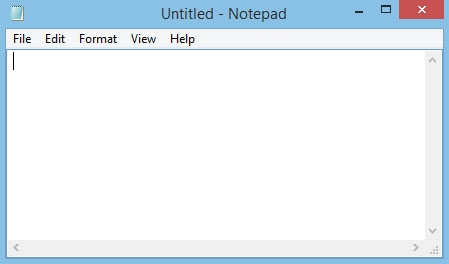Añade la estructura básica HTML en el editor de texto con la frase "Esto es una línea de texto" en la sección body.
<html>
<head>
</head>
<body>
Esta es una línea de texto.
</body>
</html>
En nuestro ejemplo, hemos guardado el archivo como first.html
Al abrir el archivo, se mostrará el siguiente resultado en el navegador:
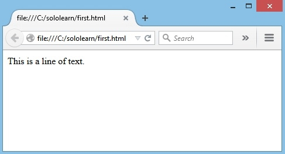No olvides guardar el archivo. Los nombres de archivos HTML deberían terminar en .html o .htm
Para colocar en la pestaña un título que describa la página web, añade un elemento <title> en tu sección head:
<html>
<head>
<title>Primera página</title>
</head>
<body>
Esta es una línea de texto.
</body>
</html>
Ésto generará el siguiente resultado:
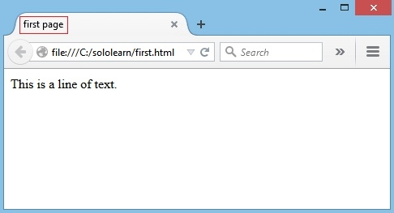El título es importante porque describe a la página y es usado por los motores de búsqueda.
A lo largo de este curso, te ayudaremos a practicar y crear tu propio y único blog, para que retengas lo que has aprendido y seas capaz de ponerlo en práctica. Sólo avanza y sigue las instrucciones en la sección TAREA. Así es como se verá tu página de blog finalizada.
Descargá el código fuente del blog mediante el siguiente enlace:
Una vez descargado el zip, extraé la carpeta que el mismo contiene y abrí el archivo HTML ubicado en dicha carpeta mediante cualquier navegador web para ver el blog.
No temas por largos códigos. Para el momento en que termines el curso, todo tendrá sentido y se verá fácilmente realizable. ¡Te lo garantizamos!
TAREA:
1. Abre el código.
2. En el encabezado, cambia el nombre por tu propio nombre.
3. Cambia el título de la página. Recuerda, el título de la página está localizado dentro de la etiqueta <title> en la sección <head>
de la página.
Para crear un párrafo, simplemente escribe dentro del elemento <p>, entre las etiquetas de apertura y cierre:
<html>
<head>
<title>Primera página</title>
</head>
<body>
<p>Esto es un párrafo. </p>
<p>Esto es otro párrafo. </p>
</body>
</html>
El resultado
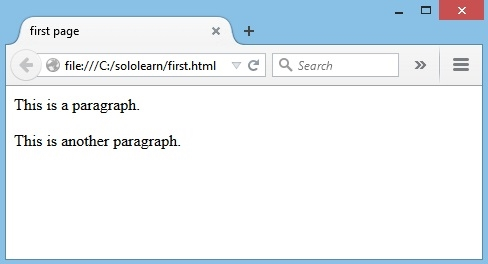Los exploradores web automáticamente agregan una línea antes y después del párrafo.
Use la etiqueta <br /> para agregar un salto de línea sin empezar un nuevo párrafo:
<html>
<head>
<title>Primera Página</title>
</head>
<body>
<p>Esto es un párrafo.</p>
<p>Esto es otro párrafo. </p>
<p>Esto es <br /> un salto de línea </p>
</body>
</html>
El elemento <br /> es un elemento HTML vacío. No tiene etiqueta de cierre.
Al abrir el archivo HTML en el explorador web muestra que un salto de línea simple ha sido agregado al párrafo:
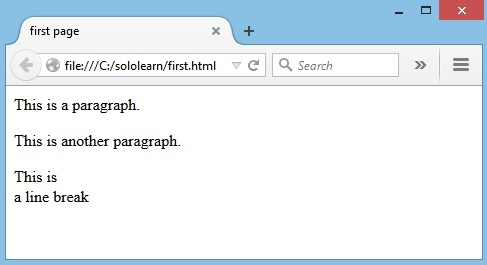El elemento <br /> es un elemento HTML vacío. No tiene etiqueta de cierre.
En HTML, hay una lista de elementos que especifican el estilo de texto.
Los elementos de formato fueron diseñados para mostrar tipos especiales de texto:
<html>
<head>
<title>Primera página</title>
</head>
<body>
<p>Esto es texto regular </p>
<p><b> Texto en negrita </b></p>
<p><big> Texto grande </big></p>
<p><i> Texto en cursiva </i></p>
<p><small>
Texto pequeño </small></p>
<p><strong> Texto fuerte </strong></p>
<p><sub> Texto subíndice </sub></p>
<p><sup> Texto superíndice </sup></p>
<p><ins> Texto insertado </ins></p>
<p><del> Texto borrado </del></p>
</body>
</html>
La etiqueta <strong> es una etiqueta de frase. Define texto importante.
Cada párrafo en el ejemplo es formateado de manera diferente para demostrar lo que hace cada etiqueta:
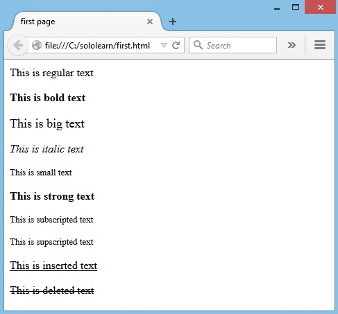Los exploradores muestran <strong> como <b>, y <em> como <i>.
Sin embargo, los significados de estas etiquetas difieren: <b> e <i> definen texto en negrita y cursiva respectivamente, mientras que <strong> y <em> indican que el texto es "importante".
HTML incluye seis niveles de encabezados, los cuales están clasificados de acuerdo a su importancia.
Estos son <h1>, <h2>, <h3>, <h4>, <h5>, y <h6>.
El siguiente código define todos los encabezados:
<html>
<head>
<title>Primera página</title>
</head>
<body>
<h1>Este es el encabezado 1</h1>
<h2>Este es el encabezado 2</h2>
<h3>Este es el encabezado 3</h3>
<h4>Este es el encabezado 4</h4>
<h5>Este es el encabezado 5</h5>
<h6>Este es el encabezado 6</h6>
</body>
</html>
Resultado:
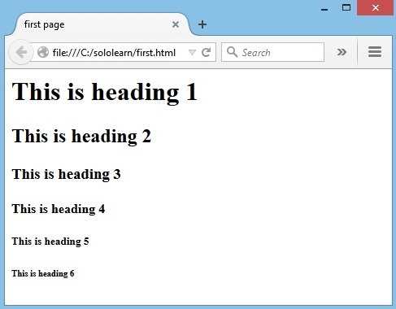No es recomendable que uses encabezados sólo para convertir el texto en negrita o cursiva, ya que los motores de búsqueda usan los encabezados para indexar la estructura de la página web y el contenido.
Para crear una línea horizontal, usa la etiqueta <hr>.
<html>
<head>
<title>Primera página</title>
</head>
<body>
<h1>Este es el encabezado 1</h1>
<h2>Este es el encabezado 2</h2>
<h3>Este es el encabezado 3</h3>
<h4>Este es el encabezado 4</h4>
<h5>Este es el encabezado 5</h5>
<h6>Este es el encabezado 6</h6>
<p>Esto es un párrafo </p>
<hr>
<p>Esto es un párrafo </p>
</body>
</html>
Resultado:
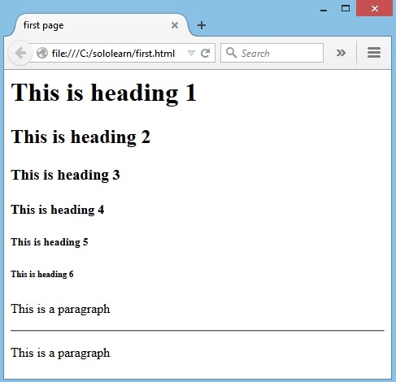En HTML5, la etiqueta <hr> define un cambio de tema.
El explorador no despliega comentarios, pero estos ayudan a documentar el código HTML para agregar descripciones, recordatorios y otras notas.
<!--Aquí va tu comentario -->
Ejemplo:
<html>
<head>
<title>Primera página</title>
</head>
<body>
<p>Esto es un párrafo </p>
<hr />
<p>Esto es un párrafo </p>
<!-- Esto es un comentario -->
</body>
</html>
Resultado:
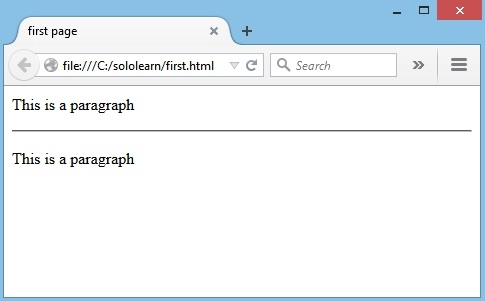Como puedes ver, el comentario no es desplegado en el explorador web.
Hay un signo de exclamación (!) en la etiqueta de apertura, pero no en la etiqueta de cierre.
Volvamos a nuestro proyecto de blog.
La sección About Me (Acerca de Mi) tendrá un encabezado que estará envuelto en una etiqueta <h1>, junto con dos párrafos que formatean el texto utilizando las etiquetas que acabas de aprender.
Vamos a echarle un vistazo al código:
<!DOCTYPE html>
<html>
<head>
<title>My Blog</title>
<link href="https://fonts.googleapis.com/css?family=Handlee" rel="stylesheet">
</head>
<body>
<!-- About Me section start -->
<div class="section">
<h1><span>About Me</span></h1>
<p>
Hey! I'm <strong>Alex</strong>. Coding has changed my world. It's not just about apps. Learning to code gave me <i>problem-solving skills</i> and a way to communicate with others on a technical level. I can also
develop websites and use my coding skills to get a better job. And I learned it all at <strong>SoloLearn</strong> where they build your self-esteem and keep you motivated. Join me in this rewarding journey. You'll have fun, get
help, and learn along the way!
</p>
<p class="quote">"Declare variables, not war"</p>
</div>
<!-- About Me section end -->
</body>
</html>
Te puedes haber dado cuenta que también hemos utilizado algo de CSS para añadir colores y estilos a la página. Cuando completes el tutorial de HTML, ¡te recomendamos nuestro tutorial gratuito de CSS!
TAREA:
1. Crea tu propia sección "About Me" modificando el texto.
2. Juega con el código; experimenta formateando el texto.
Los documentos HTML están hechos de elementos HTML.
Un elemento HTML se escribe usando una etiqueta de inicio, una etiqueta de cierre, y con el contenido en medio de ambas etiquetas.
Los documentos HTML consisten en elementos HTML anidados. En el ejemplo siguiente, el elemento body incluye las etiquetas <p>, <br> y el contenido, "Esto es un párrafo".
<html>
<head>
<title>Primera página</title>
</head>
<body>
<p>Esto es un párrafo <br></p>
</body>
</html>
Algunos elementos HMTL (como la etiqueta <br> ) no tienen etiquetas de cierre.
Algunos elementos son bastante pequeños. Como no podemos agregar contenido dentro de una etiqueta de salto de línea, y no tiene una etiqueta de apertura ni tampoco de cierre, este es un elemento separado y sencillo.
Por lo tanto, HTML es en realidad múltiples secuencias de comandos utilizando elementos dentro de elementos.
<html>
<head>
<title>Primera página</title>
</head>
<body>
<p>Esto es un párrafo</p>
<p>Esto es un <br> salto de línea</p>
</body>
</html>
Algunos elementos HMTL (como la etiqueta <br>) no tienen etiquetas de cierre.
Los atributos proveen información adicional sobre un elemento o etiqueta, a la vez que lo modifican. La mayoría de atributos tienen un valor; el valor modifica el atributo.
<p align="center">
Este texto está alineado hacia el centro
</p>
En este ejemplo, el valor de "center" indica que el contenido dentro del elemento p debería estar alineado hacia el centro.
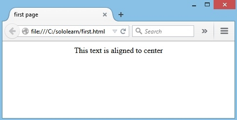Los atributos siempre están especificados en la etiqueta de apertura, y aparecen en parejas de nombre="valor".
Como un ejemplo, podemos modificar la línea horizontal para que tenga un ancho de 50 pixeles.
Ésto se puede hacer usando el atributo width:
<hr width="50px">
El ancho de un elemento también puede ser modificado usando porcentajes:
<hr width="50%">
La anchura de un elemento se puede definir mediante píxeles o porcentajes.
El atributo align es usado para especificar cómo alinear el texto.
En el siguiente ejemplo, tenemos un párrafo que está alineado hacia el centro, y una línea que está alineada hacia la derecha.
<html>
<head>
<title>Atributos</title>
</head>
<body>
<p align="center">Esto es un texto <br>
<hr width="10%" align="right" > Esto también es un texto.
</p>
</body>
</html>
El atributo de alineación <p> no está soportado en HTML5.
Puedes estarte preguntando qué pasa si intentamos aplicar atributos contradictorios dentro del mismo elemento.
<p align="center">
Esto es un texto.
<hr width="50%" align="left" >
</p>
El atributo de alineación <p> no está soportado en HTML5.
La etiqueta <img> es usada para insertar una imagen. Contiene sólo atributos, y no tiene una etiqueta de cierre.
La URL de la imagen (dirección) puede ser definida usando el atributo src.
La sintaxis HTML de una imagen se ve así:
<img src="image.jpg">
El atributo alt especifica un texto alternativo para una imagen.
Para que el explorador web pueda desplegar una imagen, necesitamos colocar dentro de comillas la ubicación de la imagen como valor del atributo src.
Por ejemplo, tenemos una foto llamada "tree.jpg" en la misma carpeta que el archivo HTML, su código debería verse así:
<html>
<head>
<title>Primera página</title>
</head>
<body>
<img src="http://www.sololearn.com/images/tree.jpg" alt="" >
</body>
</html>
En caso de que la imagen no pueda ser mostrada, el atributo alt especifica un texto alternativo que describe la imagen en palabras. El atributo alt es requerido.
Para definir el tamaño de una imagen, usa los atributos width y height (ancho y alto).
El valor puede ser especificado en pixeles o como un porcentaje:
<html>
<head>
<title>Primera página</title>
</head>
<body>
<img src="http://www.sololearn.com/images/tree.jpg"
height="150px" width="150px" alt="" >
<br />
<img src="http://www.sololearn.com/images/tree.jpg"
height="50%" width="50%" alt="" >
</body>
</html>
La carga de imágenes toma tiempo. Usar imágenes grandes puede volver lenta tu página, así que úselas con precaución.
Por defecto, una imagen no tiene bordes. Usa el atributo border dentro de la etiqueta image para crear un borde alrededor de la imagen.
<img src="http://www.sololearn.com/images/tree.jpg" height="150px" width="150px" border="1px" alt="" >
Por defecto, Internet Explorer 9, y sus versiones anteriores, despliegan un borde alrededor de la imagen a menos que el atributo border sea definido.
Los hipervínculos también son una parte fundamental de cualquier página web. Puede agregar hipervínculos a textos o imágenes que le permitirán al usuario hacer click en ellos para luego ser redirigidos a otro archivo o página web.
En HTML, los hipervínculos son definidos usando la etiqueta <a>.
Use el atributo href para definir la dirección de destino del hipervínculo:
<a href=""></a>
Para vincular una imagen a otro documento, simplemente introduce la etiqueta <img> entre etiquetas <a>.
En el siguiente ejemplo, se define un hipervínculo al sitio web de SoloLearn es definido:
<a href="http://www.sololearn.com">
Aprende jugando
</a>
Una vez que el código ha sido guardado, "Aprende jugando" será mostrado como un hipervínculo:
Haciendo click en "Aprende jugando" lo redirecciona a www.sololearn.com
Los hipervínculos pueden ser absolutos o relativos.
El atributo target especifica donde abrir el documento vinculado.
Dándole un valor _blank al atributo abrirá el hipervínculo en una nueva ventana o pestaña:
<a href="http://www.sololearn.com" target="_blank">
Aprenda jugando
</a>
Un link que ha sido visitado se muestra en violeta y subrayado.
Una lista ordenada empieza con la etiqueta <ol> y cada ítem es definido por la etiqueta <li>.
Aquí un ejemplo de una lista ordenada:
<html>
<head>
<title>Primera página</title>
</head>
<body>
<ol>
<li>Rojo</li>
<li>Azul</li>
<li>Verde</li>
</ol>
</body>
</html>
Resultado:
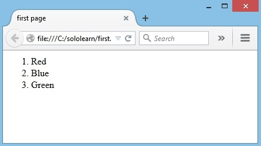Los ítems de la lista serán automáticamente marcados con números.
Una lista sin ordenar comienza con la etiqueta <ul>.
<html>
<head>
<title>Primera página</title>
</head>
<body>
<ul>
<li>Rojo</li>
<li>Azul</li>
<li>Verde</li>
</ul>
</body>
</html>
Resultado:
Los ítems de la lista serán marcados con viñetas.
¡De vuelta a nuestro blog! Vamos a crear la sección Mis habilidades, la cual es una lista no ordenada de idiomas que conoces.
Recordatorio: Utiliza la etiqueta <ul>, en la cual cada elemento es representado con la etiqueta <li>, para crear una lista no ordenada.
Echa un vistazo al código:
<!DOCTYPE html>
<html>
<head>
<title>My Blog</title>
<link href="https://fonts.googleapis.com/css?family=Handlee" rel="stylesheet">
</head>
<body>
<!-- My Skills section start -->
<div class="section">
<h1><span>My Skills</span></h1>
<ul>
<li>HTML</li>
<li>CSS</li>
<li>JavaScript</li>
</ul>
</div>
<!-- My Skills section end -->
</body>
</html>
Aprenderemos cómo añadir barras de progreso a cada una de las habilidades en nuestro módulo siguiente.
TAREA:
Las tablas son definidas usando la etiqueta <table>.
Las tablas son divididas en filas con la etiqueta <tr>.
Las filas de la tabla son divididas en columnas (datos de la tabla) con la etiqueta <td>.
Aquí hay un ejemplo de una tabla con una fila y tres columnas:
<table>
<tr>
<td></td>
<td></td>
<td></td>
</tr>
</table>
Las etiquetas de datos de la tabla <td> actúan como contenedores de datos dentro de la tabla.
Pueden contener todo tipo de elementos HTML como texto, imágenes, listas, otras tablas, y demás.
Un borde puede ser agregado usando el atributo border:
<table border="2">
La celda de una tabla puede expandirse entre dos o más columnas:
<table border="2">
<tr>
<td>Rojo</td>
<td>Azul</td>
<td>Verde</td>
</tr>
<tr>
<td><br /></td>
<td colspan="2"></td>
</tr>
</table>
Resultado:
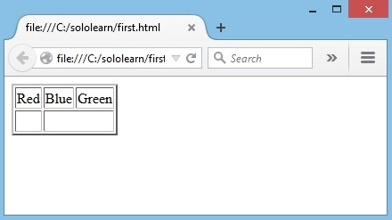El atributo border no está soportado en HTML5.
El siguiente ejemplo demuestra el atributo colspan en acción:
<table border="2">
<tr>
<td>Rojo</td>
<td>Azul</td>
<td>Verde</td>
</tr>
<tr>
<td>Amarillo</td>
<td colspan="2">Naranja</td>
</tr>
</table>
Resultado:
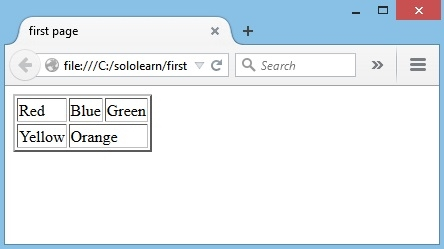Puedes ver que la celda que contiene la palabra "Naranja" se expande a través de dos columnas.
Para hacer que una celda se expanda a más de una fila, usa el atributo rowspan.
Para cambiar la posición de una tabla, usa el atributo align dentro de la etiqueta table:
<table align="center">
Ahora especifiquemos un color de fondo rojo para una celda de tabla. Para hacer eso, utiliza el atributo bgcolor.
<table border="2">
<tr>
<td bgcolor="red">Rojo</td>
<td>Azul</td>
<td>Verde</td>
</tr>
<tr>
<td>Amarillo</td>
<td colspan="2">Naranja</td>
</tr>
</table>
Resultado:
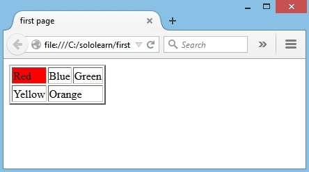En el caso de dar estilo a los elementos, CSS es más efectivo que HTML. Prueba nuestro curso "Aprende CSS" para aprender más sobre CSS y estilos.
Utiliza etiquetas de tabla para añadir una tabla a tu blog que represente tu horario diario de estudio.
Las etiquetas <th> representan encabezados de tabla.
Echa un vistazo al siguiente cógido:
<h1><span>My Coding Schedule</span></h1>
<table>
<tr>
<th>Day</th>
<th>Mon</th>
<th>Tue</th>
<th>Wed</th>
<th>Thu</th>
<th>Fri</th>
</tr>
<tr>
<td>8-8:30</td>
<td class="selected">Learn</td>
<td></td>
<td></td>
<td></td>
<td></td>
</tr>
<tr>
<td>9-10</td>
<td></td>
<td class="selected">Practice</td>
<td></td>
<td></td>
<td></td>
</tr>
<tr>
<td>1-1:30</td>
<td></td>
<td></td>
<td class="selected">Play</td>
<td></td>
<td></td>
</tr>
<tr>
<td>3:45-5</td>
<td></td>
<td></td>
<td></td>
<td class="selected">Code</td>
<td></td>
</tr>
<tr>
<td>6-6:15</td>
<td></td>
<td></td>
<td></td>
<td></td>
<td class="selected">Discuss</td>
</tr>
</table>
Las etiquetas <td> vacías representan celdas de tabla vacías. Son necesarias porque mantienen la estructura de la tabla.
TAREA: ¡Personaliza la tabla para crear tu horario particular!
En HTML, la mayoría de elementos son definidos como elementos a nivel de bloque (block) o en línea (inline).
Los elementos a nivel de bloque empiezan desde una nueva línea.
Por Ejemplo: <h1>, <form>, <li>, <ol>, <ul>, <p>, <pre>, <table>, <div>, etc.
Los elementos en línea son normalmente desplegados sin los saltos de línea.
Por Ejemplo: <b>, <a>, <strong>, <img>, <input>, <em>, <span>, etc.
El elemento <div> es un elemento a nivel de bloque que es a menudo utilizado como contenedor para otros elementos HTML.
Cuando se utiliza en conjunto con CSS, el elemento <div> puede ser utilizado para darle estilo a bloques de contenido:
<html>
<body>
<h1>Encabezado</h1>
<div style="background-color:green; color:white; padding:20px;">
<p>Esto sería el párrafo de contenido.</p>
<p>Justo aquí tienes otro artículo de contenido.</p>
</div>
</body>
</html>
Resultado:
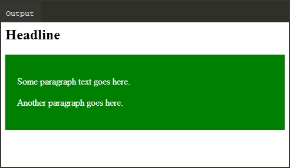El elemento <span> es un elemento de línea que es a menudo utilizado como contenedor para algún texto.
Cuando se utiliza en conjunto con CSS, el elemento <span> puede ser utilizado para darle estilo a partes del texto:.
<html>
<body>
<h2>Algún mensaje <span style="color:red">importante</span></h2>
</body>
</html>
Resultado:
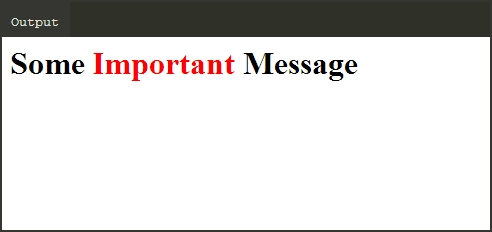Otros elementos pueden ser usados como elementos del nivel de bloque o elementos en línea. Esto incluye los siguientes elementos:
APPLET - applet Java embebido
IFRAME - marco en línea
INS - texto insertado
MAP - mapa de imagen
OBJECT - objeto incrustado
SCRIPT - secuencia de comandos dentro de un documento HTML
Puede insertar elementos en línea dentro de los elementos de bloque. Por ejemplo, puede tener múltiples elementos <span> dentro de un elemento <div>.
Los elementos en línea no pueden contener ningún elemento de nivel de bloque.
Los formularios HTML son usados para recolectar información del usuario.
Los formularios son definidos usando el elemento <form> , con sus etiquetas de apertura y cierre:
<body>
<form>…</form>
</body>
Utiliza el atributo action para apuntar a una página web que cargará después de que el usuario envíe el formulario.
<form action="http://www.sololearn.com">
</form>
Usualmente, el formulario es enviado a una página web en un servidor web.
El atributo method especifica el método HTTP (GET o POST) a ser usado cuando los formularios son enviados (observe abajo la descripción):
<form action="url" method="GET">
<form action="url" method="POST">
Cuando usamos GET, los datos del formulario serán visibles en la dirección de la página.
Utiliza POST si el formulario está actualizando datos, o incluye información sensible (contraseñas). POST ofrece mejor seguridad porque los datos enviados no son visibles en la dirección de la página.
Para capturar los datos de entrada del usuario, necesitamos los elementos del formulario correspondientes, como por ejemplo los campos de texto.
El elemento <input> tiene muchas variaciones, dependiendo del tipo de atributo. Puede ser texto, contraseña, radio, URL, envío, etc.
El siguiente ejemplo muestra un formulario solicitando nombre de usuario y contraseña:
<form>
<input type="text" name="usuario" /> <br />
<input type="password" name="contraseña" />
</form>
Resultado:
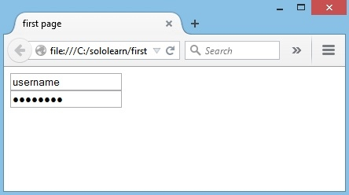El atributo name especifica un nombre para un formulario.
Si cambiamos el tipo input a radio, permitiremos al usuario seleccionar sólo una de un número de opciones desplegadas:
<input type="radio" name="gender" value="male" />Masculino <br>
<input type="radio" name="gender" value="female" />Femenino <br>
Resultado:
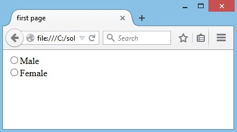El tipo "checkbox" permite al usuario seleccionar más de una opción:
<input type="checkbox" name="gender" value="1" />Masculino <br>
<input type="checkbox" name="gender" value="2" />Femenino <br>
Resultado:

La etiqueta <input> no tiene etiqueta de cierre.
El tipo submit envía un formulario a la dirección especificada en su atributo action:
Resultado:
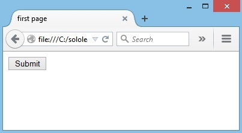Luego de que el formulario es enviado, los datos deberían ser procesados en el servidor usando un lenguaje de programación, como PHP.
A continuación, vamos a crear un Formulario de Contacto (Contact Form) para tu blog. El formulario incluirá campos de Nombre, correo electrónico y mensaje. También añadiremos un botón para Enviar.
Revisa el código:
<!DOCTYPE html>
<html>
<head>
<title>My Blog</title>
<link href="https://fonts.googleapis.com/css?family=Handlee" rel="stylesheet">
</head>
<body>
<!-- Form section start -->
<div class="section">
<h1><span>Contact Me</span></h1>
<form>
<input name="name" type="text" /><br/>
<input name="email" type="email" /><br/>
<textarea name="message" ></textarea>
<input type="submit" value="SEND" class="submit" />
</form>
</div>
<!-- Form section end -->
</body>
</html>
Esto es sólo una página HTML estática, por lo que no podrá enviar realmente el formulario. Necesitas crear el código del lado del servidor para poder enviar un formulario real y procesar la información. Para aprender cómo, completa el curso PHP de SoloLearn una vez que hayas completado los cursos de HTML y CSS.
TAREA: ¡Revisa el código y personaliza el formulario para adaptarlo a tus necesidades!
Los colores en HTML son expresados como valores hexadecimales.
0, 1, 2, 3, 4, 5, 6, 7, 8, 9, A, B, C, D, E, F
Como puede ver, hay 16 valores, desde 0 hasta F. El cero representa el nivel más bajo, y F representa el más alto.
Los colores son especificados en combinaciones de rojo, verde y azul claro(RGB por sus siglas en inglés).
Los valores hexadecimales son escritos usando el símbolo numeral (#), seguido por tres o seis caracteres hexadecimales.
Como se muestra en la imagen siguiente, los círculos se sobreponen, formando nuevos colores:
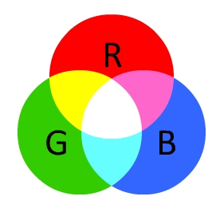Los valores de color RBG están soportados en todos los navegadores.
Todas las combinaciones posibles de rojo, verde y azul suman más de 16 millones.
Acá hay tan solo algunos de ellos:
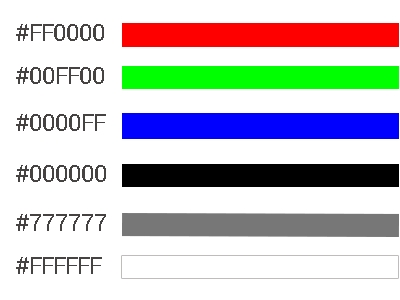Podemos mezclar los colores para formar colores adicionales.
Mezcla de naranja y rojo:
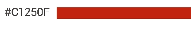Los valores de color hexadecimales están soportados en todos los navegadores.
El atributo bgcolor puede ser usado para cambiar el color de fondo de la página web.
Este ejemplo producirá un fondo azul oscuro con un encabezado blanco.
<html>
<head>
<title>Primera página</title>
</head>
<body bgcolor="#000099">
<h1>
<font color="#FFFFFF"> Encabezado blanco </font>
</h1>
</body>
</html>
Resultado:
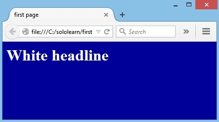El atributo color especifica el color del texto dentro de un elemento <font>.
Una página puede dividirse en marcos usando un documento especial de marco.
La etiqueta <frame> define una ventana específica (marco) dentro de un <frameset>. Cada <frame> en un <frameset> puede tener diferentes atributos, como borde, desplazamiento, la habilidad de redimensionar, etc. El elemento <frameset> especifica el número de columnas o filas en el conjunto de marcos o frameset, y también el porcentaje o número de píxeles de espacio que cada uno ocupa.
<frameset cols="100, 25%, *"></frameset>
<frameset rows="100, 25%, *"></frameset>
La etiqueta <frameset> no está soportada en HTML5.
Use el atributo <noresize> para impedir que el usuario pueda redimensionar un elemento <frame>:
<frame noresize="noresize">
El contenido del marco debería ser definido usando el atributo src.
Finalmente, el elemento <noframes> provee una alternativa para los exploradores que no soportan marcos para visualizar la página. El elemento puede contener una página alternativa, completa con una etiqueta body y otros elementos.
<frameset cols="25%,50%,25%">
<frame src="a.htm" />
<frame src="b.htm" />
<frame src="c.htm" />
<noframes>¡Los marcos no son soportados!</noframes>
</frameset>
La etiqueta <frame> no está soportada en HTML5.
Para finalizar nuestro blog, utilizaremos un frame (marco) para incluir un video de YouTube. También vamos a crear una sección Follow Me (sígueme) que incluye enlaces al final de la página.
Revisa el código final:
<!DOCTYPE html>
<html>
<head>
<title>My Blog</title>
<link href="https://fonts.googleapis.com/css?family=Handlee" rel="stylesheet">
</head>
<body>
<!-- header start -->
<div id="header" class="section">
<img alt="" class="img-circle" src="https://code.sololearn.com/Icons/Avatars/0.jpg">
<p>Alex Simpson</p>
</div>
<!-- header end -->
<!-- About Me section start -->
<div class="section">
<h1><span>About Me</span></h1>
<p>
Hey! I'm <strong>Alex</strong>. Coding has changed my world. It's not just about apps. Learning to code gave me <i>problem-solving skills</i> and a way to communicate with others on a technical level. I can also
develop websites and use my coding skills to get a better job. And I learned it all at <strong>SoloLearn</strong> where they build your self-esteem and keep you motivated. Join me in this rewarding journey. You'll have fun, get
help, and learn along the way!
</p>
<p class="quote">"Declare variables, not war"</p>
</div>
<!-- About Me section end -->
<!-- My Schedule section start -->
<div class="section">
<h1><span>My Coding Schedule</span></h1>
<table>
<tr>
<th>Day</th>
<th>Mon</th>
<th>Tue</th>
<th>Wed</th>
<th>Thu</th>
<th>Fri</th>
</tr>
<tr>
<td>8-8:30</td>
<td class="selected">Learn</td>
<td></td>
<td></td>
<td></td>
<td></td>
</tr>
<tr>
<td>9-10</td>
<td></td>
<td class="selected">Practice</td>
<td></td>
<td></td>
<td></td>
</tr>
<tr>
<td>1-1:30</td>
<td></td>
<td></td>
<td class="selected">Play</td>
<td></td>
<td></td>
</tr>
<tr>
<td>3:45-5</td>
<td></td>
<td></td>
<td></td>
<td class="selected">Code</td>
<td></td>
</tr>
<tr>
<td>6-6:15</td>
<td></td>
<td></td>
<td></td>
<td></td>
<td class="selected">Discuss</td>
</tr>
</table>
</div>
<!-- My Schedule section end -->
<!-- My Skills section start -->
<div class="section">
<h1><span>My Skills</span></h1>
<ul>
<li>HTML <br />
<progress min="0" max="100" value="80"></progress>
</li>
<li>JavaScript <br />
<progress min="0" max="100" value="50"></progress>
</li>
<li>Python <br />
<progress min="0" max="100" value="30"></progress>
</li>
</ul>
</div>
<!-- My Skills section end -->
<!-- Media section start -->
<div class="section">
<h1><span>My Media</span></h1>
<iframe height="150" width="300" src="https://www.youtube.com/embed/Q6_5InVJZ88"
allowfullscreen frameborder="0"></iframe>
</div>
<!-- Media section end -->
<!-- Form section start -->
<div class="section">
<h1><span>Contact Me</span></h1>
<svg class="face" height="100" width="100">
<circle cx="50"
cy="50" r="50" fill="#FDD835"/>
<circle cx="30" cy="30" r="10" fill="#FFFFFF"/>
<circle cx="70" cy="30" r="10" fill="#FFFFFF"/>
<circle cx="30" cy="30" r="5" fill="#000000"/>
<circle cx="70" cy="30"
r="5" fill="#000000"/>
<path d="M 30 70 q 20 20 40 0" stroke="#FFFFFF" stroke-width="5" fill="none" />
</svg>
<form>
<input name="name" placeholder="Name" type="text" required /><br/>
<input name="email" placeholder="Email" type="email" required /><br/>
<textarea name="message" placeholder="Message" required ></textarea>
<input type="submit" value="SEND" class="submit" />
</form>
</div>
<!-- Form section end -->
<!-- Contacts section start -->
<div class="section" id="contacts">
<h1><span>Follow Me</span></h1>
<div>
<a href="https://www.sololearn.com/" target="_blank">
<img alt="SoloLearn" src="https://www.sololearn.com/Uploads/icons/sololearn.png" />
</a>
<a href="#">
<img alt="Facebook" src="https://www.sololearn.com/Uploads/icons/facebook.png"/>
</a>
<a href="#">
<img alt="Twitter" src="https://www.sololearn.com/Uploads/icons/twitter.png" />
</a>
</div>
</div>
<!-- Contacts section end -->
<div class="copyright">
© 2017 My Blog. All rights reserved.
</div>
</body>
</html>
TAREA:
Cuando se están escribiendo documentos HTML5, una de las primeras nuevas características nuevas que usted notará es la declaración del DOC TYPE:
<!DOCTYPE HTML>
La codificación de caracteres (charset) también ha sido simplificada:
<meta charset="UTF-8">
Nuevos elementos en HTML5
<article>, <aside>, <audio>, <canvas>, <datalist>, <details>, <embed>, <footer>, <header>, <nav>, <output>, <progress>, <section>, <video>, ¡y más!
La codificación de caracteres por defecto en HTML5 es UTF-8.
Formularios
- La especificación de Formularios Web 2.0 permite la creación de formularios más potentes y con experiencias de usuario más enriquecidas.
- Selectores de fecha, selectores de color y controles de paso numéricos han
sido agregados.
- Los tipos de campo de entrada ahora incluyen email, búsqueda y URL.
- Los métodos de formulario PUT y DELETE son ahora soportados.
API Integrada (Interfaces de Programación de Aplicaciones)
- Arrastrar y soltar
- Audio y Video
- Aplicaciones Web sin conexión
- Historial
- Almacenamiento Local
- Geolocalización
- Mensajería Web
Aprenderemos más sobre estas nuevas funciones en las próximas lecciones.
En HTML, los elementos pertenecían típicamente al modelo de contenido de bloque o contenido en línea. HTML5 introduce siete modelos de contenido principales.
- Metadata
- Embedded (Incrustado)
- Interactive (Interactivo)
- Heading (Encabezado)
- Phrasing (Expresión)
- Flow (Flujo)
- Sectioning (Seccionamiento)
Los modelos de contenido HTML5 son diseñados para hacer la estructura de marcado más útil para el explorador y el diseñador web.
Metadata: Contenido que define la presentación o comportamiento del resto del contenido. Estos elementos son encontrados en el head (la cabecera) del documento.
Elementos: <base>, <link>, <meta>, <noscript>,
<script>, <style>, <title>
Incrustado: Contenido que importa otros recursos al documento.
Elementos: <audio>, <video>, <canvas>, <iframe>, <img>, <math>, <object>, <svg>
Interactivo: Contenido específicamente destinado para interacción del usuario.
Elementos: <a>, <audio>, <video>, <button>, <details>, <embed>, <iframe>, <img>, <input>, <label>,
<object>, <select>, <textarea>
Encabezado: Define un encabezado de sección.
Elementos: <h1>, <h2>, <h3>, <h4>, <h5>, <h6>, <hgroup>
Expresión: Este modelo tiene un número de elementos en línea en común con HTML4.
Elementos: <img>, <span>, <strong>, <label>, <br />, <small>, <sub>, y más.
El mismo elemento puede pertenecer a más de un modelo de contenido.
Flujo de contenido: Contiene la mayoría de los elementos HTML5 que serían incluidos en el flujo normal del documento.
Seccionamiendo de contenido: Define el alcance de encabezados, contenido, navegación y pies de página.
Elementos: <article>, <aside>, <nav>, <section>

Los distintos modelos de contenido se sobreponen en ciertas áreas, dependiendo de cómo están siendo usados.
Una estructura de página genérica HTML5 se ve así:

Puede ser que no necesites algunos de estos elementos, dependiendo de la estructura de su página.
En HTML4, definiríamos un encabezado así:
<div id="header">
En HTML5, una simple etiqueta <header> es usada.
El elemento <header> es apropiado para ser usado dentro de la etiqueta body.
<!DOCTYPE html>
<html>
<head></head>
<body>
<header>
<h1>Encabezado más importante</h1>
<h3>Encabezado menos importante</h3>
</header>
</body>
</html>
Note que la etiqueta <header> es completamente diferente de la etiqueta <head>.
El elemento footer también es utilizado ampliamente. Generalmente, al hablar del footer nos referimos a una sección localizada en la parte inferior de la página web.
<footer>…</footer>
La siguiente información se provee usualmente dentro de estas etiquetas:
- Información de Contacto
- Política de Privacidad
- Íconos de redes sociales
- Términos de Servicio
- Información de Derechos de autor
- Mapa del
sitio y documentos relacionados
Esta etiqueta representa una sección de una página que conecta a otras páginas o ciertas secciones dentro de la página. Esto sería una sección con hipervínculos de navegación.
Acá hay un ejemplo de un bloque grande de hipervínculos de navegación:
<nav>
<ul>
<li><a href="#">Home</a></li>
<li><a href="#">Servicios</a></li>
<li><a href="#">Sobre nosotros</a></li>
</ul>
</nav>
No todos los hipervínculos en un documento deberían estar dentro de un elemento <nav>. El elemento <nav> está hecho sólo para bloques grandes de hipervínculos de navegación. Típicamente, el elemento <footer> tiene una lista de hipervínculos que no necesitan estar en un elemento <nav>.
El elemento article es una pieza autónoma, de contenido independiente que puede ser usada y distribuida separadamente del resto de la página o sitio. Esto podría ser un post de un foro, una revista o un artículo de revista, una entrada
de blog, un comentario, un widget interactivo o gadget, o cualquier otra pieza de contenido independiente.
El elemento <article> remplaza al elemento <div> que fue ampliamente usado en HTML4, junto con un id o una clase.
<article>
<h1>El título del Artículo</h1>
<p>Contenidos del elemento artículo</p>
</article>
Cuando un elemento <article> es anidado, el elemento interior representa un artículo relacionado al elemento exterior. Por ejemplo, comentarios de un post en un blog pueden ser elementos <article> anidados en el <article> representando el post del blog.
<section> es un contenedor lógico de la página web o artículo. Las secciones pueden ser usadas para dividir contenido dentro de un artículo. Por ejemplo, una página principal podría tener una sección para introducir a la compañía,
otra para ítems de noticias, y también otra para la información de contacto.
Cada <section> debería ser identificada, típicamente incluyendo un encabezado (elemento h1-h6) como un hijo del elemento <section>.
<article>
<h1>Bienvenido</h1>
<section>
<h1>Encabezado</h1>
<p>contenido o imagen</p>
</section>
</article>
Si tiene sentido ubicar separadamente el contenido de un elemento <section>, use mejor un elemento <article>.
El elemento <aside> es contenido secundario o tangencial que podría ser considerado separado pero indirectamente relacionado al contenido principal.
Este tipo de contenido es a veces representado en barras laterales. Cuando una
etiqueta <aside> es usada dentro de una etiqueta <article>, el contenido de <aside> debería estar específicamente relacionado a ese artículo.
<article>
<h1> Regalos para todos</h1>
<p>Este sitio web será el mejor lugar para escoger regalos </p>
<aside>
<p> Los regalos serán entregados a usted dentro de las siguientes 24 horas </p>
</aside>
</article>
Cuando una etiqueta <aside> es usada fuera de una etiqueta <article> su contenido debería estar relacionado al contenido que está a su alrededor.
Antes de HTML5, no había un estándar para reproducir archivos de audio en una página web. El elemento HTML5 <audio> especifica un estándar para instructar audio en una página web.
Hay dos maneras diferentes de especificar la url de origen del audio. El primero usa el atributo source:
<audio src="http://www.sololearn.com/uploads/audio.mp3" controls>
Elemento de audio no soportado por su explorador
</audio>
La segunda forma usa el elemento <source> dentro del elemento <audio>:
<audio controls>
<source src="http://www.sololearn.com/uploads/audio.mp3" type="audio/mpeg">
<source src="http://www.sololearn.com/uploads/audio.ogg" type="audio/ogg">
</audio>
Múltiples elementos <source> pueden ser enlazados a diferentes archivos de audio. El explorador usará el primer formato reconocido.
El elemento <audio> crea un reproductor de audio dentro del explorador.
<audio controls>
<source src="http://www.sololearn.com/uploads/audio.mp3" type="audio/mpeg">
<source src="http://www.sololearn.com/uploads/audio.ogg" type="audio/ogg">
Elemento de Audio no soportado por su explorador.
</audio>
Resultado:
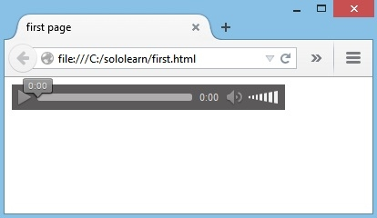El texto en medio de las etiquetas <audio> y </audio> se mostrará en los exploradores que no soporten el elemento <audio>.
controls
Especifica qué controles de audio deberían ser desplegados (como el botón de play/pause etc.)
autoplay
Cuando este atributo es definido, el audio empieza a reproducirse tan pronto está listo, sin preguntar por el permiso del visitante.
<audio controls autoplay>
<source src="http://www.sololearn.com/uploads/audio.mp3" type="audio/mpeg">
Elemento de audio no soportado por su explorador
</audio>
loop
Este atributo es usado para que el audio se vuelva a reproducir cada vez que finaliza.
<audio controls autoplay loop>
<source src="http://www.sololearn.com/uploads/audio.mp3" type="audio/mpeg">
Elemento de audio no soportado por su explorador
</audio>
Actualmente, hay tres formatos de archivo soportados para el elemento <audio>: MP3, WAV y OGG.
El elemento video es similar al elemento audio. Se puede especificar la URL de origen del video usando un atributo en un elemento de video, o usando elementos source dentro del elemento video:
<video controls>
<source src="http://www.sololearn.com/uploads/video.mp4" type="video/mp4">
<source src="http://www.sololearn.com/uploads/video.ogg" type="video/ogg">
Elemento de video no es soportado en su explorador
</video>
Otro aspecto que los elementos de audio y video tienen en común es que los exploradores más importantes no soportan los mismos tipos de archivo. Si el explorador no soporta el primer tipo de video, intentará el siguiente.
Otro aspecto compartido por los elementos audio y video es que cada uno tiene atributos controls, autoplay y loop.
En este ejemplo, el video volverá a empezar después de que termine de reproducirse:
<video controls autoplay loop>
<source src="http://www.sololearn.com/uploads/video.mp4" type="video/mp4">
<source src="http://www.sololearn.com/uploads/video.ogg" type="video/ogg">
Elemento de video no es soportado
en su explorador
</video>
Actualmente, hay tres formatos de video soportados para el elemento <video>: MP4, WebM, y OGG
El elemento <progress>(progreso) provee la habilidad de crear barras de progreso en la web.
Este elemento progreso puede ser usado con encabezados, párrafos, o en cualquier otra parte del body.
Atributos del Elemento de Progreso
Value: Especifica cuánto de la tarea ha sido completado.
Max: Especifica cuánto trabajo la tarea requiere en total.
Ejemplo:
Status: <progress min="0" max="100" value="35"> </progress>
Resultado:
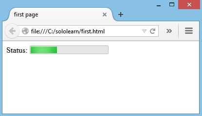Usa la etiqueta <progress> en conjunto con JavaScript para mostrar dinámicamente el progreso de una tarea.
Con almacenamiento web HTML5, los sitios web pueden guardar datos en el computador local de los usuarios. Antes de HTML5, teníamos que usar Cookies de JavaScript para alcanzar esta funcionalidad.
Las ventajas del Almacenamiento Web
- Más seguro
- Más rápido
- Guarda una cantidad más grande de datos.
- Los datos guardados no son enviados con cada petición del servidor
El almacenamiento local es por dominio. Todas las páginas desde un dominio pueden guardar y acceder a los mismos datos.
Hay dos tipos de objetos de almacenamiento web:
- sessionStorage()
- localStorage()
Local vs. Session
- El almacenamiento por sesión es destruido una vez el usuario cierra el explorador.
- El almacenamiento local guarda datos sin fecha de expiración.
Necesita estar familiarizado con JavaScript básico para entender y usar la API.
La sintaxis para el almacenamiento web en modo local y en modo sesión es muy sencilla y similar. Los datos son guardados como parejas de clave/valor.
Guardando un valor:
localStorage.setItem("clave1", "valor1");
Obteniendo un valor:
//esto imprimirá el valor
alert(localStorage.getItem("clave1"));
Removiendo un valor:
localStorage.removeItem("clave1");
Removiendo todos los valores:
localStorage.clear();
La misma del almacenamiento por sesión es casi igual, con una diferencia: En vez de localStorage se usa sessionStorage.
En HTML5, la API de GeoLocalización es usada para obtener la localización geográfica del usuario.
Ya que esto puede comprometer la privacidad del usuario, la opción no está disponible a menos que el usuario la apruebe.
La geolocalización es mucho más precisa para dispositivos con GPS, como teléfonos inteligentes y demás.
El método principal de la API de Geolocalización es getCurrentPosition, que obtiene la localización geográfica actual del dispositivo del usuario.
navigator.geolocation.getCurrentPosition();
Parámetros:
showLocation (obligatorio): Define el método callback que obtiene la información de localización.
ErrorHandler (opcional): Define el método callback que es invocado cuando un error ocurre procesando la llamada asincrónica.
Options (opcional): Define un conjunto de opciones para obtiene la información de localización.
Es necesario estar familiarizado con JavaScript básico para entender y usar la API.
La localización del usuario puede ser presentada de dos formas: Geodetic y Civic.
1. La forma geodetic para describir posición se refiere directamente a latitud y longitud.
2. La representación civic de los datos de localización es presentada en un formato que es leído más fácilmente y entendido por la persona
promedio.
Cada parámetro tiene una representación tanto geodetic como civic.
| ATRIBUTO | GEODÉSICO | CÍVICO |
|---|---|---|
| Posición | 59.3, 18.6 | Estocolmo |
| Elevación | 10 metros | 4to piso |
| Dirección | 234 grados | Centro de la Ciudad |
| Velocidad | 5km/h | Caminando |
| Orientación | 45 grados | Noreste |
El método getCurrentPosition() devuelve un objeto si su respuesta es exitosa. Las propiedades de latitud, longitud y exactitud son siempre retornadas.
La característica de arrastrar y soltar le permite "agarrar" un objeto y arrastrarlo a un lugar diferente.
Para hacer un elemento arrastrable, sólo establece el atributo draggable a verdadero:
Cualquier elemento HTML puede ser arrastrable.
La API para arrastrar y soltar en HTML está basada en eventos.
Ejemplo:
<!DOCTYPE HTML>
<html>
<head>
<script>
function allowDrop(ev) {
ev.preventDefault();
}
function drag(ev) {
ev.dataTransfer.setData("text", ev.target.id);
}
function drop(ev) {
ev.preventDefault();
var data = ev.dataTransfer.getData("text");
ev.target.appendChild(document.getElementById(data));
}
</script>
</head>
<body>
<div id="box" ondrop="drop(event)"
ondragover="allowDrop(event)"
style="border:1px solid black;
width:200px; height:200px"></div>
<img id="image" src="sample.jpg" draggable="true"
ondragstart="drag(event)" width="150" height="50" alt="" />
</body>
</html>
Qué Arrastrar
Cuando el elemento es arrastrado, el atributo ondragstart llama a una función, drag(event), que especifica qué información será arrastrada.
El método dataTransfer.setData() establece el tipo de datos
y el valor de los datos arrastrados.
function drag(ev) {
ev.dataTransfer.setData("text", ev.target.id);
}
En nuestro ejemplo, el tipo de datos es "texto" y el valor es el ID del elemento arrastrable ("image").
Dónde Soltar
El evento ondragover especifica dónde los datos arrastrados pueden ser soltados. Por defecto, los datos y elementos no pueden ser soltados en otros elementos. Para permitir soltar datos, debemos prevenir el manejo por
defecto del evento.
Esto se hace llamando al método event.preventDefault() para el evento event.
Al Soltar
Cuando los datos arrastrados se sueltan, ocurre un evento drop.
function drop(ev) {
ev.preventDefault();
var data = ev.dataTransfer.getData("text");
ev.target.appendChild(document.getElementById(data));
}
El método preventDefault() previene al explorador de manejar los datos con su opción por defecto (por defecto se abre como un evento link on drop)
Los datos arrastrados pueden ser accedidos con el método dataTransfer.getData().
Este método retornará cualquier dato que fue configurado del mismo tipo en el método setData(). Los datos arrastrados son el ID del elemento arrastrado ("image").
Al final, el elemento arrastrado es anexado en el elemento soltado, usando la función appendChild().
Se requiere un conocimiento básico de JavaScript para entender y usar la API.
SVG significa Gráficos Vectoriales Escalables (Scalable Vector Graphics), y es usado para dibujar formas con estilo de marcado HTML.
SVG ofrece varios métodos para dibujar trazos, rectángulos, círculos, texto e imágenes.
SVG no está basado en píxeles, por lo que puede ser magnificado infinitamente sin pérdida de calidad.
Una imagen SVG puede ser agregada al código HTML con sólo una etiqueta básica de imagen que incluye un atributo source apuntando a la imagen:
<img src="image.svg" alt="" height="300" />
SVG define imágenes basadas en vectores en formato XML.
Para dibujar formas con SVG, usted primero necesita crear una etiqueta de elemento SVG con dos atributos: ancho y alto.
<svg width="1000" height="1000"></svg>
Para crear un círculo, agregamos una etiqueta <circle>:
<svg width="2000" height="2000">
<circle cx="80" cy="80" r="50" fill="green" />
</svg>
- cx mueve el centro del círculo más a la derecha de la pantalla
- cy mueve el centro del círculo más abajo respecto a la parte superior de la pantalla
- r define el radio
- fill determina el color de nuestro
círculo
- stroke agrega un marco al círculo
Resultado:
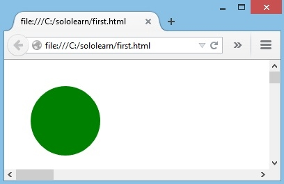Todos los elementos y atributos de los archivos SVG pueden ser animados.
<rect> define un rectángulo:
<svg width="2000" height="2000">
<rect width="300" height="100" x="20" y="20" fill="green" />
</svg>
El siguiente código dibujará un rectángulo con un relleno verde.
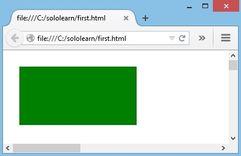<line> define un segmento de línea:
<svg width="400" height="410">
<line x1="10" y1="10" x2="200" y2="100" style="stroke:#000000; stroke-linecap:round; stroke-width:20" />
</svg>
(x1, y1) define las coordenadas de inicio(x2, y2) define las coordenadas finales.
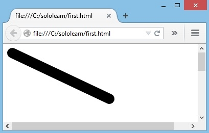<polyline> define formas construídas de múltiples definiciones de líneas:
<svg width="2000" height="500">
<polyline style="stroke-linejoin:miter; stroke:black; stroke-width:12; fill: none;" points="100 100, 150 150, 200 100" />
</svg>
Los puntos son las coordenadas de las polilíneas.
El código de abajo dibujará una marca de verificación negra:
Los atributos width y height del elemento <rect> definen la altura y la anchura del rectángulo.
Elipse
El elemento <ellipse> es similar al elemento <circle>, con una excepción:
Puedes modificar independientemente los ejes horizontales y verticales de su radio, usando los atributos rx y ry.
<svg height="500" width="1000">
<ellipse cx="200" cy="100" rx="150" ry="70" style="fill:green" />
</svg>
Resultado:

Polígono
El elemento <polygon> es usado para crear un gráfico con al menos tres lados. El elemento polígono es único porque cierra la forma automáticamente por usted.
<svg width="2000" height="2000">
<polygon points="100 100, 200 200, 300 0" style="fill: green; stroke:black;" />
</svg>
Resultado:
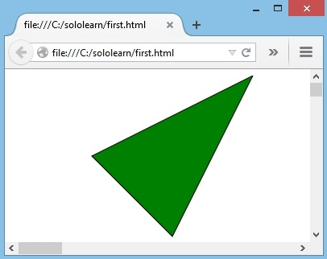Polygon viene del griego. "Poly" significa "muchos" y "gon" significa "ángulo".
Las animaciones SVG pueden ser creadas usando el elemento <animate>.
El siguiente ejemplo crea un rectángulo que cambiará su posición en 3 segundos y luego repetirá la animación dos veces:
<svg width="1000" height="250">
<rect width="150" height="150" fill="orange">
<animate attributeName="x" from="0" to="300" dur="3s" fill="freeze" repeatCount="2"/>
</rect>
</svg>
attributeName: Especifica cuál atributo será afectado por la animación
from: Especifica el valor de comienzo del atributo
to: Especifica el valor final del atributo
dur: Especifica cuánto tiempo corre la animación (duración)
fill: Especifica si el valor del atributo debe o no devolverse a su valor inicial cando la animación finaliza (Valores: "remove" resetea el valor; "freeze" conserva el “to value”)
repeatCount: Especifica el conteo de repetición de la animación
En el ejemplo anterior, el rectángulo cambia su atributo x de 0 a 300 en 3 segundos.
Para repetir la animación indefinidamente, utiliza el valor "undefined" para el atributo repeatCount.
El elemento <path> es usado para definir un Trazo.
Los siguientes comandos están disponibles para datos de Trazo:
M: mover hacia
L: línea hacia
H: línea horizontal hacia
V: línea vertical hacia
C: curva hacia
S: curva suave hacia
Q: curva Bézier cuadrática
T: curva Bézier cuadrática suave
A: Arco elíptico
Z: closepath, cerrar trazado.
Defina un trazo usando el atributo d:
<svg width="500" height="500">
<path d="M 0 0 L200 200 L200 0 Z" style="stroke:#000; fill:none;" />
</svg>
M coloca nuestro "lápiz virtual" abajo en la posición 0,0. Luego se mueve 200px hacia abajo y a la derecha, luego se mueve hacia arriba a la posición 200,0. El comando Z cierra la forma, lo que resulta en una hipotenusa:
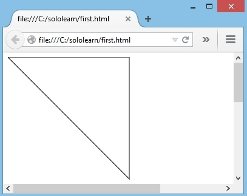Todos los comandos presentados arriba pueden también ser expresados con letras minúsculas. Cuando se usan letras mayúsculas, se indica una posición absoluta; minúsculas indican una posición relativa.
El canvas HTML es usado para dibujar gráficos que incluyen desde líneas simples a objetos gráficos complejos.
El elemento <Canvas> es definido por:
<canvas id="canvas1" width="200" height="100" ></canvas >
El elemento <canvas> es sólo un contenedor para gráficos. Se debe usar un script para dibujar realmente los gráficos (usualmente JavaScript).
El elemento <canvas> debe tener un atributo id para que pueda ser referido por JavaScript:
<html >
<head >
<script >
var can = document.getElementById("canvas1");
var ctx = can.getContext("2d");
</script >
</head >
<body >
<canvas id="canvas1" width="400" height="300"
></canvas >
</body >
</html >
getContext() retorna un contexto de dibujo sobre el Canvas.
Conocimiento básico de JavaScript es requerido para entender y usar el Canvas.
El Canvas HTML es una grilla bi-dimensional.
La esquina superior izquierda del Canvas tiene las coordenadas (0,0).
La coordenada X aumenta hacia la derecha.
La coordenada Y aumenta hacia la parte inferior del Canvas.
El elemento <canvas> es sólo un contenedor para gráficos.
El método fillRect(x, y, w, h) dibuja un rectángulo "relleno", en el cual w indica el ancho y h indica altura. El color de relleno por defecto es negro.
Un rectángulo de 100*100 pixeles es dibujado en el Canvas en la posición (20, 20):
<html >
<head > </head >
<body >
<canvas id="canvas1" width="400" height="300" >
</canvas >
<script >
var c=document.getElementById("canvas1");
var ctx=c.getContext("2d");
ctx.fillRect(20,20,100,100);
</script >
</body >
</html >
Resultado:

La propiedad fillStyle es usada para establecer un color, gradiente, o patrón para llenar el dibujo.
Usar esta propiedad le permite dibujar un rectángulo con relleno verde.
<html >
<head > </head >
<body >
<canvas id="canvas1" width="400" height="300" >
</canvas >
<script >
var canvas=document.getElementById("canvas1");
var ctx=canvas.getContext("2d");
ctx.fillStyle ="rgba(0, 200, 0, 1)";
ctx.fillRect (36, 10, 22, 22);
</script >
</body >
</html >
Resultado:
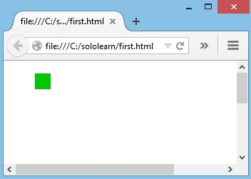El Canvas soporta varios métodos varios para dibujar:
Dibujar una línea
moveTo(x,y): Define el punto de inicio de la línea.
lineTo(x,y): Define el punto final de la línea.
Dibujar un círculo
beginPath(): Inicia el dibujo.
arc(x,y,r,start,stop): Establece el parámetro del círculo.
stroke(): Finaliza el dibujo.
Gradientes
createLinearGradient(x,y,x1,y1): Crea un gradiente lineal.
createRadialGradient(x,y,r,x1,y1,r1): Crea un gradiente radial/circular.
Dibujando texto sobre el Canvas
Font: Define las propiedades de la fuente para el texto.
fillText(text,x,y): Dibuja texto "relleno" sobre el Canvas.
strokeText(text,x,y): Dibuja texto sobre el Canvas (sin relleno).
Hay muchos otros más enfocados a ayudar a dibujar formas e imágenes sobre el Canvas.
Canvas
- Los elementos se dibujan programáticamente
- Los dibujos se realizan con píxeles
- Las animaciones no están incorporadas
- Alto rendimiento para operaciones de dibujo basadas en píxeles
- Dependiente de la Resolución
- No hay soporte para controladores de eventos
- Puede guardar la imagen resultante como .png o .jpg
- Muy adecuado para los juegos de gráficos intensivos
SVG
- Los elementos son parte del DOM de la página (Modelo de Objetos del Documento)
- El dibujo se hace con vectores
- Efectos, como animaciones son incorporadas
- Basado en sintaxis XML estándar, que provee mejor accesibilidad.
- Independiente de la Resolución
- Soporte para manejadores de eventos
- No apto para aplicaciones de juegos
- Es mejor para aplicaciones con áreas grandes de renderización (por ejemplo, Google Maps)
Podemos realmente usar tanto SVG como Canvas en la misma página, de ser necesario.
De todas formas, usted no puede dibujar SVG en un Canvas, o viceversa.
El elemento Canvas puede ser transformado. Por ejemplo, un texto es escrito en el Canvas en las coordenadas (20, 10).
<html>
<head></head>
<body>
<canvas id="canvas1" width="400" height="300">
</canvas>
<script>
var c=document.getElementById("canvas1");
var ctx=c.getContext("2d");
ctx.font="bold 22px Tahoma";
ctx.textAlign="start";
ctx.fillText("start", 10, 30);
</script>
</body>
</html>
Resultado:
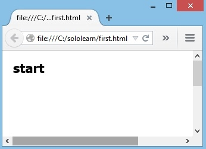El método translate(x,y) es usado para mover el Canvas. X indica qué tan lejos mover la grilla horizontalmente, y Y indica qué tan lejos mover la grilla verticalmente.
<html>
<head></head>
<body>
<canvas id="canvas1" width="400" height="300">
</canvas>
<script>
var c=document.getElementById("canvas1");
var ctx=c.getContext("2d");
ctx.font="bold 22px Tahoma";
ctx.textAlign="start";
ctx.fillText("start", 10, 30);
ctx.translate(100, 150);
ctx.fillText("after translate", 10, 30);
</script>
</body>
</html>
En este ejemplo, el Canvas se mueve 100px hacia la derecha, y 150px hacia abajo.
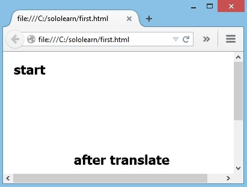Canvas tiene varios métodos para dibujar rutas, cajas, círculos, texto y añadir imágenes.
El método rotate() es usado para rotar el Canvas en HTML5. El valor debe ser en radianes, no en grados.
Acá hay un ejemplo que dibuja el mismo rectángulo antes y después de fijar la rotación:
<html>
<head></head>
<body>
<canvas id="canvas1" width="400" height="300">
</canvas>
<script>
var c=document.getElementById("canvas1");
var ctx=c.getContext("2d");
ctx.fillStyle = "#FF0000";
ctx.fillRect(10,10, 100, 100);
ctx.rotate( (Math.PI / 180) * 25); //rotate 25 degrees.
ctx.fillStyle = "#0000FF";
ctx.fillRect(10,10, 100, 100);
</script>
</body>
</html>
La rotación sólo afectará a los dibujos hechos después de que la rotación se haya realizado.
El método scale() escala el dibujo actual. Recibe dos parámetros:
- El número de veces en que la imagen debería ser escalada en la dirección X.
- El número de veces en que la imagen debería ser escalada en la dirección Y.
<html>
<head></head>
<body>
<canvas id="canvas1" width="400" height="400">
</canvas>
<script>
var canvas = document.getElementById('canvas1');
ctx =canvas.getContext('2d');
ctx.font="bold 22px Tahoma";
ctx.textAlign="start";
ctx.fillText("start", 10, 30);
ctx.translate(100, 150);
ctx.fillText("after translate", 0, 0);
ctx.rotate(1);
ctx.fillText("after rotate", 0, 0);
ctx.scale(1.5, 4);
ctx.fillText("after scale", 0,20);
</script>
</body>
</html>
Esto escalará el canvas 1.5 veces en la dirección X, y 4 veces en la dirección Y:
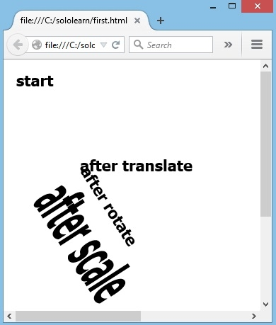Si cambias la escala de un dibujo, todos los futuros dibujos también sufrirán este cambio.
HTML5 trae muchas características y mejoras a la creación de formularios web. Hay nuevos atributos y tipos de entradas que fueron introducidos para ayudar a crear mejores experiencias para los usuarios web.
La creación de formularios es hecha en HTML5 de la misma manera que se hacía en HTML4:
<form>
<label>Su nombre:</label>
<input id="user" name="username" type="text" />
</form>
Utiliza el atributo novalidate para evitar la validación de formularios en envíos.
HTML5 ha introducido un nuevo atributo llamado placeholder. En los elementos <input> y <textarea> este atributo provee una indicación al usuario de qué información puede ser ingresada en el campo.
<form>
<label for="email">Your e-mail address: </label>
<input type="text" name="email" placeholder="email@example.com" />
</form>
Resultado:
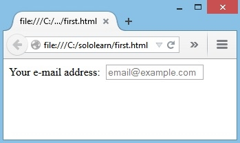El atributo autofocus hace que el cursor se posicione en el campo de entrada deseado cuando el formulario se carga:
<form>
<label for="email">Your e-mail address: </label>
<input type="text" name="email" autofocus />
</form>
Resultado:
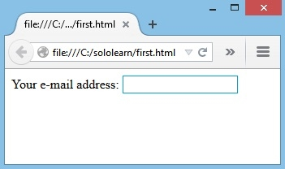El atributo required dice al navegador que el campo de entrada es obligatorio.
El atributo "required" es usado para crear los elementos de entrada necesarios:
<form autocomplete="off">
<label for="e-mail">Su e-mail: </label>
<input name="Email" type="text" required />
<input type="submit" value="Submit" />
</form>
El formulario no será enviado sin llenar los campos requeridos.
Resultado:
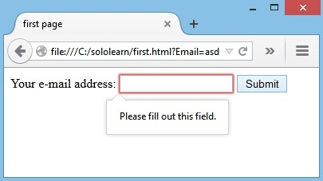El atributo autocomplete especifica si un formulario o campo de entrada debería tener autocompletar activado o no.
Cuando autocompletar está activado, el explorador automáticamente completa valores basado en valores que el usuario ha ingresado
antes.
HTML5 agregó varios tipos de entrada nuevos:
- color
- date
- datetime
- datetime-local
- email
- month
- number
- range
- search
- tel
- time
- url
- week
Nuevos atributos de entrada en HTML5:
- autofocus
- form
- formaction
- formenctype
- formmethod
- formnovalidate
- formtarget
- height and width
- list
- min and max
- multiple
- pattern
(regexp)
- placeholder
- required
- step
Los tipos de entrada que no son soportados por exploradores web desactualizados, se comportarán como una entrada de texto.
El Nuevo tipo de entrada search puede ser usado para crear un cuadro de búsqueda:
<input id="mysearch" name="searchitem" type="search" />
Resultado:
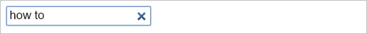Acuérdate de asignar un nombre a tu entrada, de lo contrario no se enviará nada.
La etiqueta <datalist> puede ser usada para definir una lista de opciones pre-definidas para el cuadro de búsqueda:
<input id="car" type="text" list="colores" />
<datalist id="colores">
<option value="Rojo">
<option value="Verde">
<option value="Amarillo">
</datalist>
Resultado:
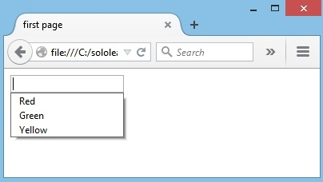<option> define las opciones en una lista desplegable para que el usuario pueda seleccionar.
El ID del elemento datalist debe coincidir con el atributo list del cuadro de entrada.
Otros tipos de entrada nuevos incluyen email, url, y tel:
<input id="email" name="email" type="email" placeholder="example@example.com" />
<br />
<input id="url" name="url" type="url" placeholder="example.com" />
<br />
<input id="tel" name="tel" type="tel"
placeholder="555.555.1211" />
Estos campos son especialmente útiles cuando se abre una página en un dispositivo móvil moderno, que reconoce los tipos de entrada y abre el correspondiente teclado que coincide con el tipo de campo.
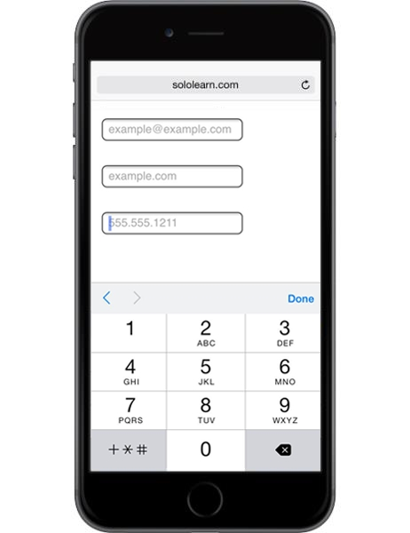Estos nuevos tipos hacen más fácil estructurar y validar los formularios HTML.